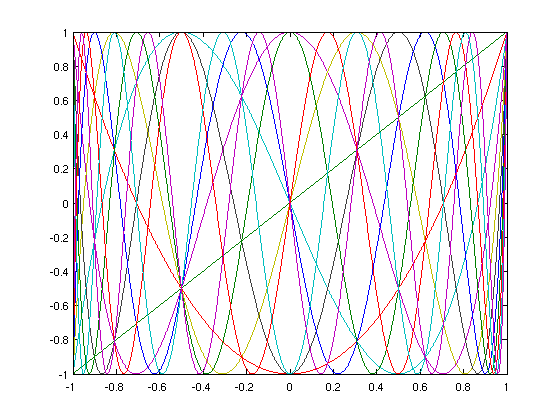
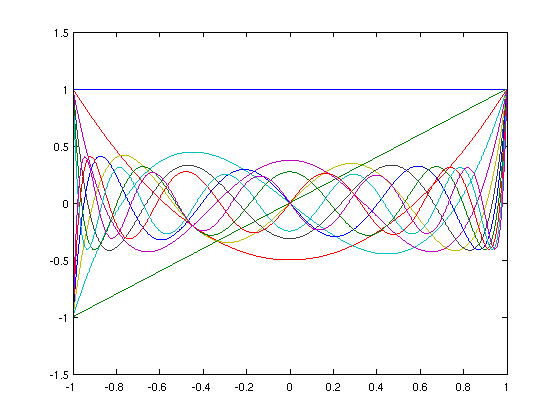
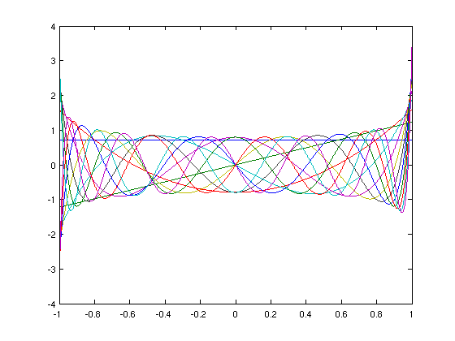
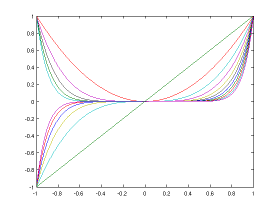

Condition numbers of various bases
Nick Trefethen, September 2010
(Chebfun example linalg/CondNos.m)
Chebfun can compute the condition number of a set of functions on an interval. That's a condition number for continuous functions, not discrete approximations.
For example, here we take the first 12 Chebyshev polynomials on [-1,1]:
tic
N = 11;
A = chebpoly(0:N);
plot(A)
fprintf('Condition no. for Chebyshev polynomials: %8.3f\n',cond(A))
Condition no. for Chebyshev polynomials: 4.006
Legendre polynomials are not much different:
A = legpoly(0:N);
plot(A)
fprintf('Condition no. for Legendre polynomials: %8.3f\n',cond(A))
Condition no. for Legendre polynomials: 4.796
Here are the Legendre polynomials normalized by having unit norm rather than by taking the value 1 at x=1. Since the functions are orthonormal, the condition number is 1.
A = legpoly(0:N,'norm'); plot(A) fprintf('Condition no. for normalized Legendre polynomials: %8.3f\n',cond(A))
Condition no. for normalized Legendre polynomials: 1.000
All of these condition numbers are fine for numerical work. Monomials, by contrast, are exponentially ill-conditioned:
x = chebfun('x'); A = [1 x]; for j = 2:N A = [A x.^j]; end plot(A) fprintf('Condition no. for monomials: %8.3f\n',cond(A))
Condition no. for monomials: 7244.534
These experiments take a surprisingly long time, which is why we've looked at sets of only twelve functions:
fprintf('Total time: %5.2f (too long!)\n', toc)
Total time: 4.61 (too long!)
Unfortunately Chebfun's QR command, though very robust due to the use of continuous Householder reflectors [1], is slow.
Now what exactly do these condition numbers mean? Here is an explanation following Chapter 4 of [2]. A is a "quasimatrix", a matrix with 12 "columns" that are not vectors but functions of the variable x on [-1,1]. This quasimatrix represents a mapping from the space R12 of vectors of dimension 12 into the 12-dimensional subspace of degree 11 polynomials in L2([-1,1]), the infinite-dimensional space of square-integrable functions defined on [-1,1]. Now suppose we consider the unit ball in R12, that is, the set of all 12-vectors whose 2-norm is <1. The quasimatrix A maps this ball into an 12-dimensional hyperellipsoid, a kind of 12-dimensional pancake. The condition number cond(A) is equal to the ratio of the largest dimension of the pancake to the smallest. When the columns of A are monomials, the pancake is very flat indeed.
References:
[1] L. N. Trefethen, Householder triangularization of a quasimatrix, IMA Journal of Numerical Analysis 30 (2010), 887-897.
[2] L. N. Trefethen and D. Bau, III, Numerical Linear Algebra, SIAM, 1997.